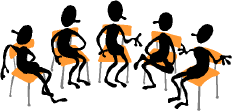

|
|
|
- how to evolve a high-nurturance stepfamily |

|
How to Form and Maintain
an Effective Self-help Group
By Peter K.
Gerlach, MSW
Member
NSRC Experts Council |

 The Web address of this article is
http://sfhelp.org/sf/help/group.htm The Web address of this article is
http://sfhelp.org/sf/help/group.htm
Updated
09-16-2015
Clicking underlined links here will open a
new window. Other links will open an informational popup,
so please turn off your
browser's popup blocker or allow popups from this nonprofit Web site.
If your playback device doesn't support Javascript, the popups may not display.
Follow underlined links after
finishing this article to avoid getting lost.
This two-page article
proposes a way to startr and maintain an effective support group for
stepfamily co-parents
and supporters.
The
"/" in re/marriage and re/divorce
notes that it may be a stepparent's first union. "Co-parents" means both
biological parents, or any of the
three or more stepparents and bioparents co-managing a multi-home
This article assumes you're familiar with...
Note - tho this article is for stepfamily co-parents, the
suggestions here apply to any mutual-help
group.
 Why This Article?
Why This Article?
Average stepfamily adults need more
support with their and their
kids' many concurrent stressors than first-marriers. One source of help is
an effectively-run co-parent support group. In my
experience as a stepfamily therapist since 1981, these groups are rare in most
communities. There are a number of online support groups available now.
Based on my experience participating in over 15 stepfamily support
groups, This
article outlines steps toward developing a
group in which most participants steadily feel that (a) their main needs are
met often enough, in ways that leave each member feeling good about
themselves, each other, and their group process.
Contents
-
What
is support (as in "support group")?
-
Ways to start a group
-
How to maintain (run) an effective group,
and...
-
Q&A
about co-parent support groups.
What Is "Support"?
Premise - in
times,
average people need to...
vent;
and...
feel validated, "normal," and encouraged; and
to...
learn and problem-solve; and
stressed people need to...
socialize and
help others; and...
feel realistic hope for the future. And typical kids and adults
need...
appropriate
touching, like hugs and pats on the back.
Effective
support groups can fill all these needs. Can you think of other
needs they fill? Here's some perspective on each of these
common needs:
 The Need To
Vent The Need To
Vent
"Venting" is talking honestly about
current emotions, needs, and thoughts.
Effective venting
happens when the speaker feels consistently heard, respected,
accepted, and
empathically understood well enough. Kids and
adults who vent and get supportive feedback may get clearer on what they
feel and need.
When listeners judge
or discount the speaker’s feelings ("You're still grieving your
divorce?"), and/or they try to fix their situation ("Look, why
don’t you ..."), the speaker’s needs may not be filled.
Because typical
differ
from intact ("traditional") biologtical families in over 60 ways, co-parents often
feel little true empathy from their friends and
kin. Unless human-service providers have had personal experience and/or special training
(which is rare), they may understand intellectually but not really empathize with
stepfamily adults or kids who vent.
So for co-parents who feel isolated, self-doubtful, confused, overwhelmed, and alone,
it can feel deeply satisfying to be
with a group of people who listen empathically and say "I know!"
Reality check: if you're in a
family or a stepfamily, do you know anyone
who seems to accurately empathize with how that feels to you?
The Need To Feel
Validated
Most of the
many hundreds of co-parents
I’ve met have not studied "what’s
in average stepfamilies. They unconsciously use intact-bio(logical)family
norms, expectations, and solutions in coping with stepfamily problems.
Too often, these efforts don’t fill kids and adults' needs well enough.
Mature women and
men struggling with a mix of alien stepfamily
may feel confused
and overwhelmed. As rosy early-re/marriage dreams
inexorably morph into stressful realities, partners without accurate stepfamily
may begin to doubt
their perceptions and competencies.
This is specially
likely for women, who’ve been trained by a patriarchal society to accept that
they’re mainly responsible for making their (step)family happy.
By telling parts of their current stepfamily
story and consistently having other co-parents nod and say "Yeah, we’ve had
that experience too," support group members can feel major relief
that they’re normal and OK after all.
Exception. there are
of stepfamily,
so some group participants may not find others who can fully validate their
feelings and needs. Still, a well-functioning support group can provide
welcome affirmation that "we’re not crazy!" and "we're not alone!"
Another common reason people attend self-help groups is to fill...
The Needs To
Learn and Problem-solve
As stepfamily problems
emerge, typical adults seek help to understand and reduce their stress. They need to
learn...
-
stepfamily (vs. biofamily)
norms, and..
-
useful resources, and....
-
practical ways to
and
their problems.
An effectively-run real or
online support
group can be a great source of each of these.
Besides needs to vent, be validated, learn,
and problem-solve, average stepfamily adults also...
Need
to Socialize and to Help Others
Many divorcing and re/married men and women (and their ex mates) carry
significant psychological wounds ffrom their early childhood. Such
(GWCs) may either
seek or avoid social contact. They may also seek self
worth through helping other needy people.
Many
people (with minimal wounds) also enjoy fellowship and helping others.
Others are introverts and prefer to solve their own problems rather than
seek support.
Effective support-group
leaders periodically poll the members to keep the right current balance between
their needs for venting, validating, learning and problem-solving ("business"),
and just socializing together.
A benefit I’ve heard some busy re/married
mates voice is that their co-parent meetings provided a regular "date" night - a
scheduled time alone to talk, plan, and just
enjoy each other. Also, good friendships
for adults and their respective
kids can evolve from a series of support-group meetings and multi-family events.
A final reason people attend mutual-help groups is to
satisfy...
The Needs for Encouragement and Hope
Typical stepfamily
are
concurrent, and often feel alien. Several years of failed attempts to reduce
these stressors can erode hope for effective solutions in the strongest
optimist. As hope dwindles, so may courage and stamina to keep trying.
If confused, weary, and discouraged co-parents are uncomfortable seeking professional help
(or can't find any), they may hope that
"going to a group" will solve their problems.
Usually that won’t
work, since support groups and therapy groups are very
different
in objectives, design, leadership, and process. Ideally, support-group members can
tell when a newcomer needs professional help. and have a referral list of local
mental-health professionals.
Whether in a crisis or not,
all
stepfamily co-parents need sincere, credible encouragement that they can
learn to manage their problems. This is a powerful reason to start or join
a group, because many co-parents don't know other stepfamily
veterans to talk with.
|
Bottom line:
adults (and kids!) in typical multi-home stepfamilies often need to vent, feel validated
and encouraged, learn what's normal, solve their confusing relationship problems, socialize, help others in need, and
strengthen realistic hopes. |
Effective co-parent support groups can help fill these
concurrent needs. Conversely,
ineffective
and toxic groups promote impractical and/or harmful advice to
those who attend.
Ways
to Start
a Co-Parent
Support Group
The initial resource needed to establish a
successful co-parent support group is one or several dedicated people. If
you are one, Bravo!
To
begin, group founders can...
-
set clear group guidelines and goals in advance, then
seek participants who agree with these goals; or...
-
get an initial co-parent gathering together
and evolve a
support-group structure and objectives from their collective input, or…
-
set some loose guidelines first, then refine them to fit
whoever shows interest.
The last option is the one I've
seen work most often.
For perspective
on these options, let's look at...
 Five Types of
Support-Group Participants
Five Types of
Support-Group Participants
Though there
are many variations, the people I've seen who regularly attend co-parent
support groups fall into five general categories.
One trait common to these five types
is one or both mates being psychologically
and
and not knowing what that
Type 1:
Previously divorced or single
people who have a serious new relationship growing but aren't yet
committed.
They may or may not be living together. These people are aware they're a
stepfamily-to-be
(vs. denying that), and want to "get it right" this time for their and their kids’ sakes.
Such people are
probably not in a stepfamily crisis. They - specially divorcing
bioparents - want to learn relevant, accurate how-to information in advance.
They’re drawn to hearing veteran co-parents tell of their
experiences (and solutions), and knowledgeable guest speakers describe aspects of
stepfamily life.
These "newby" co-parents are apt to be more idealistic than...
Type
2: Re/married couples who are feeling confused and somewhat stressed.
They’ve
been living together for months or a few years, and are probably finding their stepfamily
doesn’t feel like what they were
expecting. One or both partners may
acknowledge they’re a stepfamily (or a "blended family"), but they
probably don’t really know what that
In these couples, one mate (usually a stepmom) is more interested in finding
and joining a support group than the other. Type 2 people are likely to be in a
custodial (vs. visitation) stepfamily home. They often have begun to encounter
serious
and
conflicts, and are uneasy about them. These pairs may or may not have
conceived "ours" kids together. One
or more of the stepkids may be "acting out" at home and/or school, and/or an ex
mate has been "causing problems."
While open to
learning, Type 2’s have a higher need for validation than Type 1’s, because
they feel somewhat blamed, misunderstood, guilty, self-doubtful, and anxious. The newcomer
may feel frustrated their spouse isn’t solidly enthused about coming - or isn't
there.
Another kind of support-seeker is...
Type
3: Adults or couples in a
major
who
are desperate for effective answers to their conflicts. They may or may not be in
therapy, and may be interested in the group on their own or because a counselor referred
them. Usually, these partners differ in their motivation to participate in a
group, and/or have different motives (needs).
These co-parents
may frustrate other group members, because they’re scared, confused,
and conflicted. They may be more interested in explaining and justifying
their side of
the battle, blaming (their partner, stepkid, or others), and
griping ("Ain't
it awful?"), than in mutual
problem-solving.
These co-parents can use up much group time doing these things and wanting
the group to "prove" their mate or ex is "wrong" or "bad." Typical
type-3
couples don’t know how to do
win-win
and use these lose-lose
They may resist learning how
to problem-solve out of
misplaced pride or unconscious fear.
Type 4: Re/married
co-parents who would rather meet with same-gender peers ("Let’s have a
stepmoms’ group!"). For a variety of reasons, they seem to be more
interested in venting, validation, socializing, and commiserating than effective co-ed re/marital
problem-solving.
Since 1981 I’ve seen a number of such groups form among
female
co-parents and none among their men. Understandably, gay
co-parents tend to fall in this fourth group of prospects, though they may truly seek
problem-solving.
Finally, there is...
Type 5: A large group of couples
are dating seriously or
committed,
and both mates deny or ignore their
stepfamily
These pairs don’t know what they
need to know about avoiding or resolving complex stepfamily
problems.
If they see an ad for your group, these
people think "that doesn’t apply to us." They often become the Type 3
"crisis" couples that come to a group when they have major trouble. Skillful
support-group
advertising or the
advice of an informed minister, doctor, or co-parent friend may motivate such people
to try one meeting.
You can
use this typology to decide who your group is designed to serve.
Planning the First Meeting
If you’re
considering forming a support group, do you have any help so far? It’s more fun and
less work if you can find at least one other person to team with you in planning and
running the first meeting. If you can’t find a partner who’ll commit direct
participation, can you find an advisor who has started some kind of support group before?
Stepfamily couples who empower a support group together often seem to harvest
important relationship and social benefits...
The aim of the
first gathering is to meet one or more stepfamily co-parents who
are willing to help form a co-parent (vs. stepparent) support group.
Set Realistic Expectations
I’ve
seen many instances where enthusiastic organizers put a lot of effort into planning and
advertising a first support-group event. They expected dozens of participants
(in the greater Chicago area) - only to
find fewer than 10 people came. The organizers felt disappointed and frustrated, and saw
their effort as a failure. Actually, that’s a pretty good first turnout.
Some
reasons why stepfamily adults don’t throng to even the
best-promoted first meeting are...
Many courting co-parents often don’t
(yet) as a
stepfamily. Or if they do,
they’re apt to believe idealistically "Our love will get us through."
Either way, they see little point in seeking "stepfamily" or
"co-parent" support. And...
Many co-parents choose jammed
lives, and feel they have
"too little time." Unless they're in a crisis, attending a
self-help group is a low priority activity.
And...
Average stepfamilies have
more minor kids (say
three or more) than their biofamily counterparts (one to three). That means less
"free" couple time. (Paradox: attending a support group is one of the best
investments of time and energy co-parents can make!)
Other reasons for not attending...
One group of veteran (re/married) co-parents feel
"OK enough," so they see little need to get support.
The other veteran group
does acknowledge significant problems and is uneasy or ashamed to admit that
publicly by going to a support group. Most U.S. stepfamily mates have
been divorced at least once. To admit that a second (or third) primary relationship feels
rocky is pretty scary. It’s safer to stay home. And...
If the
support group seems to be linked to a church,
hospital, or a mental health organization, some co-parents’ negative biases get
triggered: "Looks like a group for sick divorced people (or "Jesus
freaks") - no thanks!"
Another reality is that
- because of inherited shame and distrust - some ethnic groups can be
specially private
about their family affairs. Relatives can be scathingly critical if a family member
"goes public" in a support group. Similarly, Some religious communities teach
that divorce is sinful, and re/marriage is either invalid or blasphemous.
Social pressure can powerfully inhibit such co-parents from trying out a support
group.
|
The least obvious low-attendance factor (I think) is that
most stepfamily adults seem to come from
(traumatic) childhoods. Most
such
(GWCs) learned long
ago to be extremely independent, and not risk asking for or accepting help. This has to do
with having been repeatedly let down by key early caregivers, feeling unworthy of
help, and distrusting any that's offered. |
Despite these
combined factors, the odds are high that there are co-parents in your community
who are motivated to meet and exchange stepfamily help.
Motivating People to Come...
There are several
ways to motivate (most) such people to attend an initial gathering. Here are four options I’ve seen
work - i.e. five or more co-parents (vs. couples) show up:
1) Advertise a support-group
"organizing" meeting. This is the least-effort and most direct route. In
my experience, it’s also the least likely to work. Despite tentative interest,
most of us (who may feel over-committed to begin with) aren’t excited about going to
an unknown place to have an "administrative" meeting with some strangers. (Have
you ever been to a fun or "really satisfying" organizational
meeting?)
Still, it’s worth trying. You may harvest even one other person who will
team up with you to try another approach. You might also connect with a sponsor. Any
advertisement will alert your community that there are stepfamilies "out there,"
who have needs and issues too...
Another option is to...
2) Hold a
public information program. Given the right advertising "spin," this
kind of initial support-group event can seem very interesting, or even fun! Several
options:
-
A moderated panel of veteran co-parents, step-teens, or both,
describing their stepfamily experiences and recommendations. To raise interest and energy,
invite audience questions and supportive comments as part of the process. My experience is
that a moderated panel of four to six people provides a lively, interesting 90"
meeting.
-
A presentation
about a key stepfamily topic by a qualified speaker; or...
-
Showing and discussing a
stepfamily film or video;
and/or...
-
Advertise a safe, educational stepfamily
role-playing exercise.
A third option for your first meeting is...
3) Advertise to a select audience
like these:
-
Single-parent support
groups like
Parents Without Partners (PWP). Such
groups are full of Type 1 prospects and a few twice-divorced parents.
Search the Net for possibilities;
-
Church congregations
or their adult-education committees and groups;
-
Family-related support groups like
"Rainbows"
and
"Tough Love." These often have a high percentage of
(troubled and highly motivated Type 3 and 4 stepfamily co-parents;
-
Parents who've been notified through a
school or
district
PTO / PTA mailing; and…
-
Community college or other local adult-education classes
focusing on family and parenting topics.
Lesson 7 here offers many
stepfamily
articles which can help design an
interest-building presentation.
During the
introduction to any such program, mention that ideas for - and interest in - an ongoing
support group will be invited toward the end. Promoting small and large group discussions
during these programs starts a co-parent bonding and identity-building process.
I’ve
found consistently that there's a surge of enthusiasm as the co-parent participants
discover mutual stepfamily interests, experiences, and conflicts - and a wish to share
more.
Unless the program is too long, poorly
organized, or too late in the day, many participants are often energized and "up" for
discussing an ongoing co-parent support group!
At the close of such initial events,
ask any people interested in forming a support group to meet with you briefly. Plan time
for this.
Confirm their initial interest, and invite them to a planning, exploratory,
or brain-storming meeting. Get names, phone numbers, referrals to other people or groups
who might be interested, and clear commitments for one more meeting. Iron out any
scheduling conflicts. Describe the positive benefits of a viable support group clearly.
Another way to start a group is to...
4) Offer a stepfamily class. I’ve given dozens of 18-hour co-parent classes
since 1981. My experience is that the "best" class format...
-
is for 12 to 16 people. Couples are encouraged, but not
required;
-
has clear, enforced
group rules about punctuality,
committed attendance, fees (if any), smoking, breaks, refreshments, and
confidentiality; and...
-
is clearly educational,
not therapy (i.e. deep emotional
venting or serious interpersonal fighting is out of bounds); and...
-
covers the major interests and
needs (above) of the attendees over time;
And the most effective class format...
-
mixes presentations
with small and large group
discussions
at each session; and...
-
focuses on topical problem definitions and positive
solution
options; and...
-
includes handouts summarizing key points, and uses worksheets
to promote couple and group discussions and value clarifications; and...
-
is informative, supportive, safe, and (at times)
fun!
One benefit
to offering a pre-structured class is that real group trust and bonding usually bloom
across the class sessions. I’ve found often that as such a class ends, the
participants don’t want to lose the empathy and comradeship that
have developed. The suggestion to keep meeting - and perhaps expanding to include others
in the community - is often welcome.
Option: tailor
Lesson 7 content to fit your situation.
OK - if you’ve done one or more of these first
meetings, hopefully you’ll have harvested several other co-parents solidly interested
in forming a support group. Now what?
When this
group-planning
meeting (or series) is over, you want to have forged ...
-
Initial group trust,
-
shared feelings of common purpose,
commitment, and optimism;
-
a good-enough agreement on
issues like those below, and...
-
agreements on who's going to do what next.
Guidelines
Start each
organization meeting with a summary of the general
purpose, and the meeting’s agenda. Initially, ask people for...
-
their preferred name;
-
brief background on their stepfamily
structure, status, and experience;
-
why they're interested in starting a group;
-
any
experience in organizing or participating in a support group; and...
-
"What do you hope we accomplish at this
meeting?"
-
any concerns for this meeting about smoking, confidentiality, and ending times.
Set the tone by saying that you’ve gathered to brainstorm, and any
ideas or thoughts are welcome, no matter how weird or far-fetched.
|
ALERT!
I’ve often seen an
extra-needy person or couple vent at great length and take the meeting over.
Avoid that by reminding everyone before they come and as you start that this
is planning meeting, and that future meetings will provide the chance for
sharing. |
Be
assertive and persistent on staying focused so you all feel it was a productive meeting
when you finish.
Links below lead to answers on the next page or click the "top" limk. Use
your browser's back button to return here
1)
What are our co-parent support-group
goals?
2)
Membership: who is our group
for - and not
for?
3) How will we
recruit or attract
new members?
4) Who do we want
to make
referrals to us? How
shall we invite them?
5) What kind of
image do we want to
present to our community, if any?
6)
Should we limit our
size? How big?
7)
Site options: where will we meet?
8) What should our
meeting format be?
9)
How often should we meet? For how long
(per meeting)?
10) Will we need
to raise funds? For what? When? How?
11) Do we want a
local business
sponsor or affiliate organization? If
so - who? Costs (risks, obligations, limits) and Benefits?
12) Should we have a
newsletter? For just group
members, or others? Containing what?
13) Do we need
professional (clinical) backup and/or other
resource
people? Why? Who? Should we offer child care?
The next links go to a new window. Close it to return here.
14)
What
group-process rules
and guidelines will help us meet our goals?
15) Should we try to
compile a
resource library? Of what? How?
16) Should we have
a group name and/or logo?
17) Who’s in charge of what,
for now? An effective leader will ask for volunteers to be
responsible for coordinating key group-process functions like
registration, refreshments, resurces, publicity, special events, a
social-media page, and a newsletter.
18) Add any
questions that fit your unique situation.
The resulting list forms an
for your organizational meetings. As you see, there’s a lot to decide! If this
looks daunting, one option is to rank-order these topics by
relevance to getting your group underway.
Another
option is to rough-draft answers to some or most of these questions, and evolve firmer
policies as you gain members and group experience.
You don’t have to decide all
these at once!
Review all these
questions one at time with your planners. Decide those you can, then ask for volunteers to work on options for
some or all of the remaining questions. Have them bring back their ideas and
recommendations to the next planning meeting. Investing patient, focused effort in
group design (vs. jumping right in) really pays off, over time!
My experience with over 15 co-parent
support groups suggests that there is no one
best group
design. The
mosaic of personal, couple, and stepfamily situations that your participants bring will
form a unique blend of needs. To
succeed,
your group members should value getting
on their
respective
needs and working together to fill them.
+ + +
Decisions on these organizing questions form your group's policies,
which should support your mission or vision statement. For clarity and consistency, summarize and write down these policies to
use in advertising your group and informing new people.
 What are our main support-group
goals
?
What are our main support-group
goals
?
David Campbell titles his job-counseling book "If
You Don’t Know Where You Want To Go - You’ll Probably End Up Somewhere Else." In the same vein, a support group
without clear goals is like the proverbial boat without a rudder.
I suggest evolving a
concise (i.e. one or two paragraphs), clear mission statement - early - and
reading it at the start of each meeting to focus everyone. This is specially helpful when
new people are present.
Basically,
you’re coming together to
fill members’ special needs to...
-
Vent - i.e. be empathically heard
and...
-
Feel validated and accepted by co-parenting
peers
-
Clarify, validate, and get effective
solutions to
current stepfamily problems
-
Learn relevant stepfamily norms, realities, and
resources
-
Reduce stepfamily co-parenting
isolation
-
Heal pre-re/marriage wounds
-
Raise the quality and effectiveness of your
co-parenting
-
Socialize and enjoy each other’s company
-
Offer a vital resource to each other and the people of your
community.
Can you
think of other needs the group can fill? Discussion and your increasing
support-group experience may generate other key goals for you all.
Who is our group for - and not for?
-
Any re/married adults, adults considering
re/marriage,
or both;
-
Stepparents only, stepmoms(dads) only, or
stepparents and bioparents ("co-parents");
-
Couples only, or any interested individuals, or
whole stepfamilies.
-
The general public, or just members of a sponsoring
church congregation or community.
My experience
is the best option is to invite all
interested prospective and veteran stepfamily
co-parents, up to your group size-limit (if any). Couples are strongly encouraged,
and
individuals are welcome. All-stepfamily gatherings or events (including minor and/or grown
kids, and maybe interested kin) may happen several times a year (e.g. a holiday meeting),
with group consensus.
Having separate
meetings for members’ kids is wonderful - and a lot of work.
If you
have several adults who are experienced and willing to commit to organizing and
supervising periodic meetings for your older pre-teens or teens - great!
An important
membership consideration has to do with the depth of people’s needs: Unless
you have a
attending and facilitating
regularly, be clear that your support group is
meant as a
substitute for qualified professional counseling. State that clearly in any
verbal and media advertising, and include it in your mission statement.
Some signs
indicating that professional help is warranted: (even joking) comments about
suicide or murder; extreme
depression, anxiety, paranoia, or reality distortion; descriptions of
family physical or verbal
abuse or
neglect obvious
addicted to
chemicals, activities, or people; couples arguing violently in the group; inappropriate
sexual conduct at home or in the group; and the like.
See
"screening prospects" and "resource people" below for options. It’s a good idea to ask people who are high on any chemicals to stay home or leave.
How shall we
recruit new
members?
Who do we want to make
referrals
to us?
How shall we invite
that?
Once
you’re clear on what you’re all trying to do, and for whom, you’re in a
place to advertise. From my experience, there are some Do's and Don'ts about
effectively publicizing your co-parents' support group for an initial meeting, or a
regular meeting.
Terminology Can Be Key
Some people may be turned off
by, or not understand, the terms "stepfamily" or "stepparent"
(mental associations: wicked, second-best, etc.). Alternative publicity
adjectives are blended or reconstituted (also confusing),
remarriage,
or second-marriage families.
Fortunately, the negative bias against
"step-" seems to be shrinking, as people get used to this
"new" type of normal family (estimated to be about one of five U.S. households,
in many places...).
Advertising a "stepparent’s"
group potentially leaves out the many bioparents who are married to a stepparent, but have
no stepkids. They need just as much support! Better alternatives are to say clearly
you’re a group for "stepfamily adults", or "stepfamily co-parents",
or "stepparents and their partners" - if you are.
The most effective support-group recruiting
publicity seems to be periodic
human-interest stories in your community paper, with a photo or two. Focusing on an actual couple or family will get people's attention, and
lead them into reading about and considering your support group.
Notices in the community-
meeting section of local papers, as well as radio and cable and network TV
public-service
announcements (usually free) work well. These often need to be submitted in writing to
the newspaper or broadcast station two or three weeks in advance of the event.
Other
places to advertise
-
(Liberal) church bulletins and newsletters
-
Middle and high-school district PTO/PTA newsletters
-
Local-government and organizational flyers - e.g. park district, junior college,
hospital, or public mental health center adult education programs
-
Public and private counseling agencies - including hospital outpatient departments,
and mental health, family-medicine, and family-law private-practitioners, are usually glad
to know of support groups to make selective referrals to them.
-
Have your members tell their doctors, pediatricians, dieticians,
pharmacists, and dentists of your support
group when they visit. Perhaps 20% of their patients are in stepfamilies!
-
Divorce-mediation and family-law lawyers can
be helpful, too - if they clearly understand you don’t need emotionally
chaotic or warring people...
-
Colorful posters can attract wide attention in high-traffic places like libraries,
grocery and drug stores, fast-food outlets, copying centers, video-rental stores,
entrances to public transportation, etc
-
Local banks or realty offices may allow reputably-sponsored organizations to include
co-parent support-group flyers in their mailings
-
Local single-parent support-groups may have newsletters which will advertise you.
Even if they do, visit their meetings periodically and describe your group.
About 70% of U.S. single moms and dads remarry within five to seven
years...
See if local
organizations are sponsoring any "Rainbows"
(grief-support) groups. Often the kids in them are in stepfamilies. Also, a majority of
the adults in "ToughLove" support groups are (pretty troubled)
stepfamily co-parents of teens. Search the Web for info on them.
Some liberal
ministers may agree to make referrals and/or post notices. Ministers who re/marry
couples are potentially the best people to alert new stepfamily co-parents of what
they’re (all) getting into.
Clergy and other counselors are often handicapped
by lack of qualified stepfamily training and direct experience.
If one or more of
your members is computer-literate, consider creating a
home page on the Internet. If your local city government
and/or a local major hospital has their own home page, they may be willing to include
a listing for your group as a community resource.
One way of
advertising is to invite relevant community people to sit in on a meeting or two -
specially if they’re re/married. Typical human-service professionals have no
comprehensive idea of the scope and kind of
stepfamily co-parents and their kids
are routinely faced with. When they hear some typical stories from your members, they may
gain empathy and motivation to refer people (and/or funders!) to your group.
Build a mailing list of potential
referral sources from your phone book, and send a descriptive flyer every quarter or
so. The more planned and thought-out your group design, and the more established you are,
the more likely such organizations and people will be to endorse and cooperate with your
group - specially if they're are in a stepfamily!
What kind of image do we want to
present to our community?
Some options about
key
themes you want the public to "get" about your support group from your
advertising:
-
We’re here for
all (adult?) members of potential or actual stepfamilies with live-in and/or visiting,
minor and/or grown stepkids;
-
We are (or are not)
affiliated with any local religious or mental health organization, or a
12-step
movement;
-
Our primary purposes
are education and re/marital and stepfamily support (vs. therapy), because
millions
of U.S. stepfamilies ultimately re/divorce;
-
We are an open,
drop-in (or call-first) group, with clear confidentiality policies (if you are);
Should we have a group size limit? How big is too
big?
My experience
is that eight to 16 people per meeting is optimal. Less than seven or eight people
seems to be under the "critical mass" that will attract and hold group interest
and loyalty.
That’s partly because there are so many
a small
group lowers the chance that attendees will meet "someone a lot like me/us".
More people means more potential experience, wisdom, and creativity to draw on for
solutions.
More than around
16 participants risks too many who need to vent at a meeting, and some winding up
feeling "cut-off" or frustrated. Large-group decision-making gets lengthy and
cumbersome, too. Often, a major group-size factor is the capacity and facilities of the
meeting site. Either can determine the other...
What should our meeting format (agenda) be?
Your
co-parents' support group can be on a continuum between
totally structured to completely
unstructured.
My experience is that moderately structured often works best. That means have a
loose, standard format, like...
-
An opening,
-
A "working" (learning, venting, and/or
problem-solving) segment,
-
A short refreshment break,
-
Some socializing / administrative time, and ...
-
A closing.
The opening is an important
ritual which builds group identity
and "gets everyone in the mood." Options:
-
Welcome and introduce any new and/or resource people present;
-
Someone read the group’s brief mission (and maybe policy) statements;
-
Each person give a
brief
statement of what they're feeling right now if they wish to;
-
Some groups may want a
brief prayer, meditation, or inspirational idea;
-
Review this meeting’s agenda; and...
-
Ask "Who needs air time?"
"Working
time" is where
everyone attends their
needs to vent, exchange affirmation, clarify,
learn, problem-solve, and
belong. Again, you have several options:
Invite each member to "check in" or "pass": introduce
themselves, if new people are present, and describe briefly (~ 5" each) how they are,
and any important stepfamily or re/marital events, problems, and successes. This may be
the place to learn if they need air time;
Have a guest speaker focus on some topic relevant to most (or ideally all)
people present, followed by discussion;
Have "air time," where a few members speak at length about
their current stepfamily situation, and get feedback if desired;
Do focused
for member/s who asks for it, and/or ...
If you’re doing a self-led stepfamily class together, do one
segment of the class;
Take a break, get refreshed, and regroup. Then...
Attend any administrative business (funding, advertising, recruiting,
planning, etc.),
Relax and socialize, or …
Complete any unfinished matters from the "working time."
Close the meeting: perhaps
with a (physical) friendship
circle, a prayer, a summary of what you’ve just done together (specially positive
options and solutions that emerged), and/or an expression of thanks and encouragement to
troubled members and to all.
You may choose to ask each person to say what
they're aware of, as you end. However you design it,
your closing segment is a
powerful way of forging group identity, loyalty, community, and continuity. Some
12-step and other groups close with "Keep coming back - it (our group)
works!"
The
"looseness" of such a meeting format comes from your ability to mold each
segment to fit your collective circumstances at the time. Sometimes you’ll have a
speaker, other times not. Sometimes you’ll have a lot of administration
subbjects, other
times little or none.
Sometimes many people will need air time, other times everyone will
be in a pretty good space and will just enjoy socializing.
The one constant at every
meeting is your members' set of common needs to vent / validate / learn / problem-solve /
belong, and socialize, / help, and / build optimism and hope.
My experience is
that co-parent support groups who’s meeting agendas are consistently free-form (i.e.
the meeting agenda is no agenda) don’t last long. Similarly, groups that are
run with an over-rigid schedule and format are a turn-off for all but people with high
needs for structure . So you’re looking for a dynamic balance of these that
usually works for enough of your members …
An important
administrative task is for the group leader/s to periodically poll all members on their
comfort level with the average meeting format, and to adjust the format if enough people
want to. You’ll evolve your own best-fit routine over time.
Where
will we meet?
Options:
(a) member’s homes, or (b) somewhere else. Your group's basic needs are a nearby
bathroom, moveable, comfortable chairs (ideally), "enough" elbow room and quiet,
a sink and counter space, an accessible public phone, perhaps a refrigerator, and places
for parking and hanging up any heavy-weather clothes.
Many
co-parent support groups I’ve been in have rotated the hosting responsibilities among
the members. This was partly because no one could find a suitable "outside"
site.
The advantages to this approach are economy (free),
simplicity (no
outside people to negotiate with), and all sharing the site-prep and refreshment
responsibilities. The disadvantages are (a) group size may be limited to fit the smallest
home/s, and (b) often, phones, kids, and pets can be distracting.
Possible non-home
sites can include meeting rooms at a local church, school, civic building (library,
park district, city hall, ...), hospital, business, or a public or private mental health
agency. One Chicago group found a comfortable (free) home in a local realty office’s
conference room.
Again, where choice exists, you may lower chances of limiting group
attendance by avoiding church and mental-health sites, and people’s (unfortunate)
related biases. Conversely, some people would be attracted because you were
in a
church...
Meet
when,
how often, and how long?
These choices will
evolve from your group’s unique personality.
The norm I’ve seen is to meet
once or twice a month, on a week night or early Sunday evening, for two to two and a half
hours. For eight or more people, meeting for less than that often doesn’t allow
enough air and administrative time. That breeds frustration and dropouts.
Do we need to raise
funds? For what? When?
How?
How will you pay
for postage, advertising, printing, space, refreshments, speakers, educational kits, and
supplies? Many groups use a combination of passing the hat at each meeting, fund-raisers,
and soliciting community or participant donations (of supplies, copying service, or space,
vs. money).
Fund raisers can take many forms: car washes, bake and garage sales, wine
tasting or meet-the-cast parties, artist benefit performances, mail solicitations,
raffles, etc. These can be fun group-building events as well as work. They provide good
community advertising, too.
My experience
suggests that unless your group gets "big,"
the idea of fixed dues and
formal memberships is generally a turnoff. Dues take time to
account for, can imply exclusivity or formality, and will take periodic
group time in discussion and haggling.
Their advantage is that
they provide regular and (fairly) predictable income, enabling more or
"wider" activities. Who in your group will handle the money-management
responsibilities?
Do we
want a local business sponsor or affiliate organization? If so,
who?
Costs and benefits?
A well-known
community organization's endorsement of your co-parental support group can lend it instant
credibility. Mental health agencies, hospitals, clinics, or churches, however, carry a
mix of associations for prospective attendees.
If any such sponsor already has a good
community reputation for unbiased and positive family-life education programs, fine.
Otherwise, if you advertise such sponsorship prominently you may get credibility - and
limit the scope of the people who'll try out the group because of biases about or against
such organizations.
Should we compile a
resource library? Of what?
How?
Typical co-parents often don’t know what they
don’t know about stepfamily norms, co-parental tasks, special stepchild needs, and
effective solutions. One solution to this is to provide informed
stepfamily education. Your support group is a perfect place to do
this!
Collect printed and media stepfamily information
that members contribute, or you buy with group funds. Make it available for loan or
purchase at your meetings, and build motivation for members to use it.
Develop
and maintain a stepfamily bibliography and resource list, and pass it
out
to members and community libraries, hospitals, mental health centers,
churches, and school counseling departments. See if one of your members will
be your group's "resource director" (!), and coordinate this key project...
| Option:
as you do this, consider these guidelines for selecting useful
stepfamily
books, and avoiding
inaccurate, impractical, and toxic
resources. |
Some good stepfamily information sources:
The articles and
worksheets in this Web site - specially those in
Lesson 7;
The nonprofit
National Stepfamily Resource
Center (NSRC)
Searchable online bookstores like
Amazon.com,
and these...
Online stepfamily
resources
Should
we have a group newsletter and/or Web site? For just our
members, or others, too? Who? Containing what? Published how 0ften? In
print, and/or via online social media?
A newsletter is hard
work - and an effective way of welcoming new
members;
advertising your support group's presence, agendas, events, and any donors' or sponsors'
services; distributing useful stepfamily facts or articles; and promoting a feeling of
"group-ness" and continuity.
Many stepfamily
and stepparenting
Web
sites offer newsletters, teswources, and blogs. Browse and see what appeals
to you (format, content, length, tone, layout, etc.).
Do we need
professional backup
and/or
other resource people?
Why? Who?
Besides your
participants, there are
three kinds of resource people that can add a lot to the
quality and effectiveness of your support group:
-
knowledgeable guest speakers,
-
qualified clinicians,
and...
-
support-group and public-relations consultants.
Before selecting
any, read and discuss
this.
"Knowledgeable speakers"
are any local people who have stepfamily-relevant knowledge, and the time and heart to
share it. At the head of the list of experts are your older stepkids! Close behind
are your co-grandparents and other stepfamily relatives.
Other options
include family-law lawyers or judges, professional (post- divorce) mediators, specialized
teachers and therapists (including clergy), and consultants in child development,
relationships, parenting, verbal communications, and family finances.
Qualified
clinicians can be psychiatrists (MDs), clinical (vs. research)
psychologists, clinical and psychiatric social workers, or marriage-and-family and
pastoral counselors. "Qualified" here means they have - in addition to
therapy fundamentals and experience - some special interest and training in, and
experience with, the topics in this
and these common
It’s a great asset to build and
use a referral list of qualified
local
mental-health professionals and local support organizations (like
Rainbows, Tough Love, and
Mothers Without Custody) for steppeople in
Such resource people can be
excellent guest speakers.
Don’t hesitate to ask
qualified clinical
people to help your group! Many mental-health professionals are interested in the
chance to help (and learn!), and in possible sources of client or patient
referrals. Some professionals are stepfamily co-parents themselves!
The third type of helpful support-group
resource persons are consultants who have special experience and
training in establishing and maintaining a flourishing non-therapy
support group. Such people may be lay or professional, and local or distant.
Local public and private
mental-health agencies, hospitals, and larger churches usually sponsor a range of public
support groups. They may have a group liaison person or coordinator who would advise for
free, and/or point you at other local resource people.
 Effective
Support Group - concluded
on p. 2 Effective
Support Group - concluded
on p. 2
|